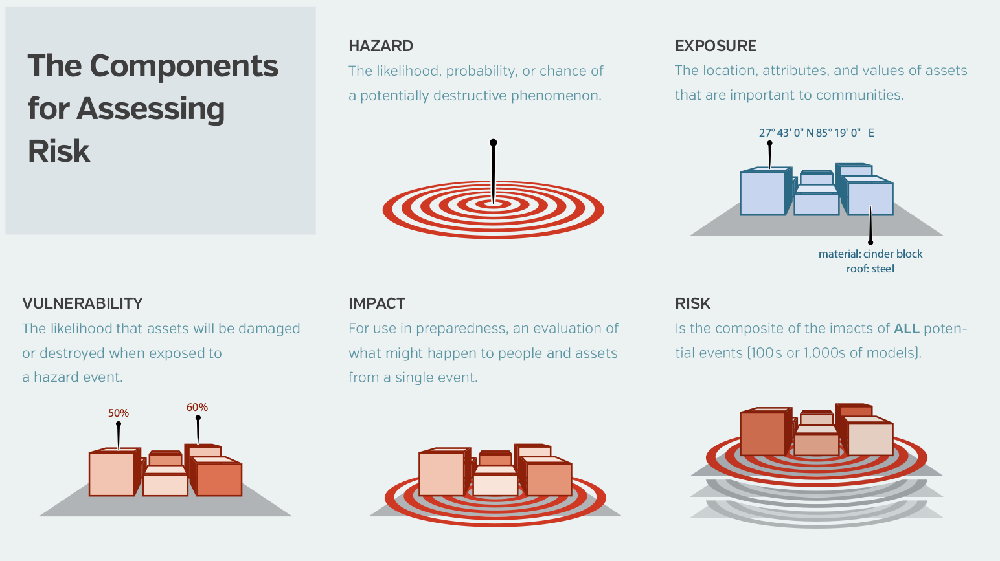

This page explains the methodology and rationale behind the Open Data for Resilience Index.
The Open Data for Resilience Index is an online tool to track and assess the openness of key data related to disaster risk management (DRM) across the world.
It follows the principles of the Open Data for Resilience Initiative stating that disaster risk data should be:
- open by default,
- accessible,
- licensed and documented,
- co-created,
- locally owned, and,
- communicated in ways that meet the needs of diverse users.
Information available on the Open Data for Resilience Index is collected thanks to a crowdsourced-based effort. Contributors and users may be DRM specialists or any producer or user of disaster risk data. This includes organizations and individuals such as civil protection and emergency departments, geospatial and environment agencies, all other public entities, utilities, academia, media as well as open data and right to information advocates.
The success of the Open Data for Resilience Index depends mainly on its contributors community and the way it engages with them.
Scope and use cases
The Open Data for Resilience Index can be useful in many different contexts. Below are some examples of use cases:
- A DRM specialist wants to conduct a disaster risk data inventory in a given country and assess the availability and ease of use for each dataset;
- A Government wants to improve its preparedness for natural disasters and identify what essential information is lacking or difficult to access;
- An insurance company wants to conduct a damage assessment and is seeking exposure data of certain assets;
- A transparency advocate is campaigning for better access to key data related to natural disasters in his/her country.
Furthermore, the Open Data for Resilience Index might help Governments and the DRM community to respond to the following questions:
- Which data are essential to disaster risk management? How are they produced and shared?
- Which Governments should improve and invest more in open data for better disaster risk management?
- Which disaster risk data are the more/less open? For which type of hazard?
- Which principles of Open Data for Resilience are the most difficult to implement?
- Which Governments perform better regarding disaster risk data and why? Is there any correlation with the level of hazards?
Assumptions
The Open Data for Resilience Index has been developed with the following assumptions in mind:
The role of a government is to curate or produce disaster risk datasets relevant to its territory or sub-territory. It should be accountable for the continued and effective use of the datasets through open publication of the data. The Open Data for Resilience Index therefore primarily focuses on assessing datasets per countries.
There are countless datasets that may be used to perform DRM activities. However, only a few of them are critical, and if missing, may hinder or even prevent effective DRM. Those data are referred to as key risk datasets, and this project is about identifying, defining and assessing their openness across different places.
Different datasets could match in part or completely with a specific key risk dataset description for a given territory. For instance you could have two different aerial imageries of your country provided by two different organizations. This is reflected in the Index where users can submit more than one dataset for a given key dataset description and a given country, each of them being assessed independently.
Datasets
The initial selection process of key disaster risk datasets was based on a consultation of DRM specialists, working on different types of hazards, and a review of disaster risk data projects, inventories and standards.
The Open Data for Resilience Index identified a set of 36 datasets considered to be key for DRM activities involving at least one of the following hazards:
- Coastal flooding
- Cyclone
- Earthquake
- Landslide
- River flooding
- Tsunami
- Volcano
- Water scarcity
Furthermore, the Open Data for Resilience Index distinguishes between five different categories of disaster risk data:
- Base data: key datasets necessary to conduct DRM activities, such as topographic and administrative maps of the territory.
- Exposure data: includes data on population and assets. Exposure describes the situation of people (e.g. how many), infrastructure and housing (e.g. where located), production capacities and other tangible human assets located in hazard-prone areas.
- Hazard data: Data related to a type of hazard, including any historical (observed) information or model related to the description and intensity of a hazard event. Hazards currently include coastal flooding, cyclone, earthquake, landslide, tsunami, volcano and water scarcity.
- Vulnerability data: this data describes the susceptibility of an individual, a community, assets or systems to be impacted by a hazard.
- Risk data: This data is derived from combining base data, exposure hazard and vulnerability data. It includes indicators from existing impact assessments (single event) or risk assessments (multiple events).
For a better understanding of those categories and why there are key to disaster risk management see the diagram below.

Source: Understanding Risk in an Evolving World, GFDRR
Below is the full list of datasets currently available in the Open Data for Resilience Index.
| Dataset | Description | Category |
|---|---|---|
| Digital elevation model | Digital elevation model (DEM) describing the terrain's surface with a horizontal resolution of at least 100 meters and covering all flood prone areas. The Digital elevation model includes a digital surface model (DSM) of surface elevation including objects (e.g. buildings and trees) and a Digital terrain model (DTM) of the bare ground surface. | Base data |
| Aerial imagery | Aerial imagery, such as vertical view or orthophoto, covering the whole territory, with a resolution of at least 10 meters. | Base data |
| Administrative boundaries | Shapes of official boundaries of the country and its administrative units such as states, regions, or districts. | Base data |
| Topographic map | Topographic map at 1:100,000 or better scale with names of main geographical places (toponyms), including cities and villages. | Base data |
| Watershed boundaries | Shapes of watershed boundaries for the characterization of river basins for the whole territory. Watershed boundaries are topographic divides and delineate areas where surface-water runoff drains into a common surface-water body. | Hazard |
| Water bodies | Shapes of main water bodies (river network, lakes, coastline) | Hazard |
| Soil type | Map of geological characterization of the soil type, with resolution of at least 1 km | Hazard |
| Flood hazard maps | Flood hazard maps at any available resolution for benchmarking of the flood model. A flood hazard map describes the geographical areas that are prone to flooding for a given return period (typically between 2 and 1000 years). Additional value is provided by maps that indicate water depth and flood duration. | Hazard |
| Meteorological gauge data | Historical gauge data of rainfall, temperature and wind. Several stations across the area of interest and daily records. Sub-daily records are needed for flash flood modelling. Wind data can be used also in coastal flooding as well as volcano related computations. | Hazard |
| Hydrological gauge data | Historical water levels and river discharges from gauge stations on major river branches. Daily records and annual maxima. | Hazard |
| Bathymetry | Bathymetry map describing the terrain that lies underwater, or the depth of water relative to sea level, with a resolution of at least 10 meters. | Base data |
| Nearshore tsunami wave height | Tsunami wave heights at nearshore locations for a range of return periods between 2 and 1000 years. | Hazard |
| Storm surge gauge data | Historical sea level data from coastal gauge stations. Hourly records and/or daily maxima. | Hazard |
| Flood protection measures | Shapes of all major flood defense structures (levees, flood walls, dams, diversions, etc) reflecting the most recent flood mitigation constructions | Hazard |
| Cyclone wind speed statistics | Maximum wind speed (open water wind) for a range of return periods, typically between 2 and 1000 years | Hazard |
| Active seismic fault | Hazard | |
| Seismic hazard curves | Seismic hazard curves expressing the probablity of exceeding a number of intensity measure levels within a time period (e.g. annually or in 50 years). Typically these curves are calculated considering soil type equal to rock (Vs30 = 760 m/s), and various intensity measure types (Peak Ground Acceleration or Spectral Aceleration at different periods of vibration - 0.3s and 1.0 s). | Hazard |
| Seismic hazard model | A probabilistic seismic hazard model describing the seismogenic sources in the country and the ground motion prediction equations that should be used. This model can be used to compute seismic hazard curves and maps. | Hazard |
| Site conditions map | A map describing the soil conditions that can be used to calculate seismic hazard at the surface. These maps are typically part of microzonation studies, but for seismic hazard calculations in large regions geology maps can also be used. | Hazard |
| Volcanoes | Basic geographic and geologic information for volcanoes located in the country including name, position, summit elevation, and volcano type. | Hazard |
| Hazard scenarios | Historical records of significant natural hazard events in the country including the type, intensity, footprint, description and date of the hazard events. Historical records may refer to only one or more hazard types. Data may also contain non observed but plausible scenarios of hazard events. | Hazard |
| Land Cover | Map of land cover (physical material at the surface of the earth such as grass, asphalt, trees, water) for the whole territory. Land cover may also include types of land use such as urban or agriculture. Resolution must be at least 1 km. | Exposure |
| Population | Map of population distribution, usually from census data, disagregated at the lowest administrative level (district, zipcode, block, etc.). Resolution must be at least 1 km. | Exposure |
| Economic activities | Statistics of economic activities for the country at the most detailed level,and including at least the Gross Domestic Product (GDP) per economic sector. | Exposure |
| Buildings | Map showing number and characteristics of buildings, including type of use (residential, commercial, industrial), either at the most detailed administrative unit (district, block, etc.) or, if possible, on a per-building basis. | Exposure |
| Agricultural production | Map of the average annual agricultural production per acre of land, where possible subdivided per type of crop or cattle, either per smallest administrative unit or per square km. | Exposure |
| Critical infrastructure | Shapes of lifeline infrastructures such as utilities that provide essential services to the people. Crititical infrastructures include roads, railways, power, water, and telecommunication networks and assets as well as bridges, airports, harbors, education and health facilities. | Exposure |
| Vulnerability curves for aggregated assets at administrative unit level | Functions for calculating the economic damage on all assets in a certain area from the hazard level (e.g. flood depth or earthquake intensity) | Vulnerability |
| Vulnerability curves per land cover type | Functions for calculating the economic damage from hazard level (e.g. flood depth or earthquake intensity) and type of land cover | Vulnerability |
| Vulnerability curves for critical infrastructure | Functions for calculating the damage on critical infrastructure from hazard level (e.g. flood depth or earthquake intensity) | Vulnerability |
| Vulnerability curves for population | Functions for calculating the number of people affected and fatalities from hazard level (e.g. flood depth or earthquake intensity) and population density | Vulnerability |
| Vulnerability curves for economic activities | Functions for calculating the economic damage from hazard level (e.g. flood depth or earthquake intensity) and information about economic activities (e.g. GPD per economic sector) | Vulnerability |
| Vulnerability curves for buildings | Functions for calculating the economic damage on buildings from hazard level (e.g. flood depth or earthquake intensity) and building type | Vulnerability |
| Vulnerability curves for agricultural activities | Functions for calculating the economic damage on agriculture from hazard level (e.g. flood depth or earthquake intensity) and agriculture production | Vulnerability |
| Risk indicators from previous studies | Results from previous risk assessments for comparison. These may consist of: i)Risk maps (gridded or aggregated per administrative unit). Risk level may indicate losses from a single event or losses for a given return period. ii)Tabulated risk per a given area, for example Loss Exceedance Curve, Event Loss Tables, Year Loss Tables or historical loss data. iii) Exposed assets for a given event (historical or associated with a return period). | Risk |
Openness criteria
The Open Data for Resilience Index uses a set of 10 questions to assess the openness of a given dataset. Those criteria are similar to other open data assessment frameworks, such as the Open Data Index and the Open Data Barometer and in line with the OpenDRI principles.
Below is the list of questions used to assess the openness of a dataset.
- Does the data exist?
- Is the data available in digital form?
- Is the data publicly available?
- Is the data available online?
- Is the metadata available online?
- Is the data available in bulk?
- Is the data machine-readable?
- Is the data available for free?
- Is the data openly licensed?
- Is the data provided on a timely and up to date basis?
Scoring methodology
A percentage of openness is provided for each dataset submitted. A dataset is considered fully open (100%) when all questions have been answered YES.
Aggregated scores are also provided for type of hazards, risk data categories (Base data, Hazard, Exposure, Vulnerability and Risk) and countries.
For countries scoring, only the hazards for which the level is at least assessed as medium or higher on ThinkHazard! are taken into account. This means all data related to hazards with a low or very low level are not considered for assessing a country since the incentive to invest in such data is negligible. ThinkHazard! is a tool from GFDDR which highlights the likelihood of different natural hazards affecting project areas (very low, low, medium and high) based on published hazard data, provided by a range of private, academic and public organizations.
Data collection process
Submission
Anyone registered on the website index.opendri.org can contribute to the Open Data for Resilience Index which follows a crowdsourced data collection process.
Validation
Each dataset submitted is then reviewed by at least one member of the team of reviewers made of OpenDRI staff and DRM specialists. The dataset submission is either marked as approved or rejected. The reviewer can also edit the data submission and correct or add additional information. Once submitted and while being reviewed, a dataset remains visible online to the public.
If you want to become a reviewer, please send an email to [contact email to be defined]
Update
[Need to define this]
Similar projects
The Open Data for Resilience Index of GFDRR is inspired by the Open Data Index of Open Knowledge and the Open Data Barometer of the Web Foundation. It applies the idea of tracking and assessing open data to the DRM sector.
The main differences with the Open Data Index and Open Data Barometer are:
The number of submissions per dataset. In the Open Data for Resilience Index, it is possible to submit and approve more than one dataset for a given key dataset description and a given country. Each of those submissions are independently reviewed.
The data collection phase. Whereas the Open Data Index and the Open Data Barometer are conducted on a yearly basis, the data collection phase for the Open Data for Resilience Index is conducted on a continuous and ongoing basis.